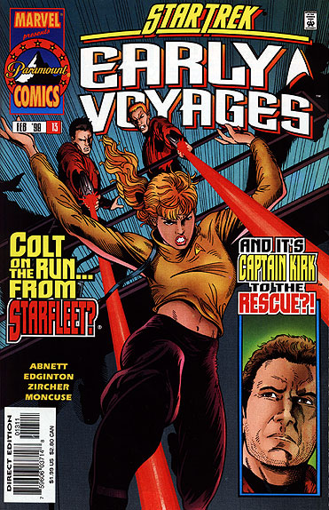
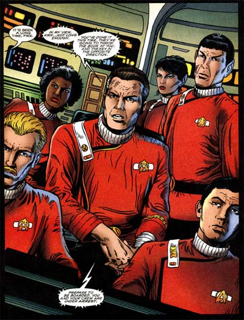

|


|
Gnese
| Episdios I Reflexes
| Palavras do autor | Palavras
do artista Star Trek
Early Voyages, n 13 fevereiro de 1998  Histria: Dan Abnett e Ian Edginton Material produzido por Salvador Nogueira para o Trek Brasilis
Data Estelar: desconhecida Sinopse: Colt se v cercada por dois oficiais da Frota. Ela foge deles e percebe que a Enterprise est estranhamente vazia. Ao correr ainda mais, ela descobre que est mesmo na Enterprise, mas que a nave est instalada no Museu Smithsonian, na Terra, como parte de uma exposio. Os oficiais continuam correndo atrs dela. Com agilidade e destreza incrveis, a ordenana consegue fugir do prdio. Ela percebe, entretanto, que ainda est sendo seguida por um homem. Ela rende este homem, a fim de saber por que ele est atrs dela. Ele se revela Jim Kirk, um capito de uma nave cargueira chamada Bounty. Ele desconfia que ela seja Mia Colt, a ordenana da Enterprise que desapareceu dcadas atrs sem deixar vestgio. Os dois contam um ao outro suas histrias. Colt conta como foi parar ali, por meio do artefato que ela pegou em Argol II. Kirk, por sua vez, relembra como o sumio da ordenana mudou sua vida. Ele estava saindo da Academia, formando-se oficial da Frota Estelar, quando tudo aconteceu. Originalmente ele seria designado para um posto na Farragut, sob o capito Garrovick, mas com o sumio de Colt ele acabou designado para a Enterprise, sob o capito Pike. Pike, por sua vez, no aceitou bem a segunda troca trgica de ordenana em poucos meses, e tratou Kirk com o maior desprezo possvel. O oficial passou um ano a bordo da Enterprise antes de desistir da Frota e tornar-se um capito de cargueiro comercial. Colt est disposta a tudo para retornar a sua poca de origem, e pede ajuda a Kirk. Ele decide que vale a pena tentar lev-la de volta a Argol, na esperana de restaurar a vida que ele teria se ela no tivesse sumido. O problema que o planeta agora est dentro do territrio Klingon. Mesmo assim, a tripulao de Kirk concorda em arriscar a vida para ajudar Colt. Ao adentrar o espao Klingon, a nave atacada por um cruzador de batalha comandado pelo general Chang. O Bounty est para ser destrudo quando a Enterprise-A entra em cena, comandada por Pike. A nave Klingon foge diante da inferioridade numrica, mas Pike em seguida j ordena que Kirk se renda, por violao do espao Klingon. Continua...  Comentrios Embora a histria siga com a mesma qualidade da edio anterior, alguns tropeos fazem o leitor pensar que talvez a equipe j estivesse com problemas para manter a publicao e sua qualidade. Primeiro que uma histria chamada "Futures, Part I" obrigatoriamente pediria uma "Futures, Part II". Alternativamente, seria possvel dispensar os "Part" e usar em cada uma um nome diferente. Vemos entretanto uma miscelnea, quando abrimos o volume e descobrimos a histria "Future Tense, Part II"! Nada grave --afinal, o que seria de Jornada nas Estrelas sem os bloopers?--, mas um sinal de que as coisas no andavam to bem nos bastidores de Early Voyages. Outro tropeo, esse ainda mais impressionante, quando somos obrigados a nos confrontar novamente com os dois guardas da Frota que tentam capturar a ordenana Colt. No fim da edio anterior eram um negro e um loiro, e agora so um moreno caucasiano e um loiro! O tropeo foi to notado que um dos leitores da revista chegou a escrever para perguntar do ocorrido. A resposta dos editores foi bem-humorada, como no poderia deixar de ser: "Sabe, o que ns ainda estamos tentando entender como a ordenana Colt nunca soou o alarme sobre esses malditos transmorfos!" Provavelmente os erros de continuidade --irrelevantes nos termos da histria, mas sem dvida incmodos, at pela simplicidade-- tenham a ver com a mudana de desenhista e de arte-finalista de uma edio para outra. Zircher est de volta publicao, trazendo novamente seus traos de extremo realismo, em uma edio que certamente os iria exigir --afinal, algum precisaria desenhar direito o bom e velho Jim Kirk! A histria aqui tem dois personagens principais --Colt e Kirk--, mas fica bvio que o segundo, at por seu status lendrio em Jornada, rouba a cena. interessante a forma como Abnett e Edginton desenvolveram esse universo paralelo, sustentado apenas em uma nica mudana: o desaparecimento da ordenana da Enterprise, dcadas atrs. O desvio de rota na vida de Kirk especialmente convincente, assim como os traos de personalidade da derivados. bvio, algumas coisas so convenientes demais, como termos Scotty como engenheiro de Kirk, mas do um toque de nostalgia ainda mais especial edio. Alis, nostalgia a palavra-chave aqui. Alm de Kirk e Scotty, temos a apario da Enterprise-A, com todos os seus tripulantes, e a volta do general Klingon Chang ao universo de Jornada, um personagem que certamente merecia aparecer mais do que seu nico momento de glria em "Jornada nas Estrelas VI - A Terra Desconhecida". Por fim, vale dar um crdito aos roteiristas por conseguirem fazer algo que Ronald Moore e Brannon Braga no conseguiram fazer em "Generations", colocar dois capites hericos e admirveis em conflito. A idia original para "Generations" era ter algo como Picard versus Kirk, mas ningum conseguiu desenvolver bem a histria deste modo. Em compensao, Abnett e Edginton fazem o impossvel e conseguem colocar Kirk e Pike em posies opostas e de conflito. Mas este um assunto para a prxima edio...
|